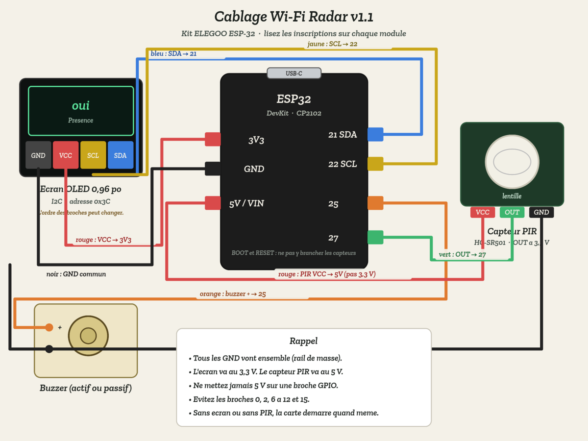

Wi-Fi Radar v1.1 · kit ELEGOO ESP-32
Comment brancher l’écran, le buzzer et le capteur
Ce guide est pour le kit ELEGOO ESP-32 Super Starter (puce USB CP2102). Vous n’avez pas besoin de souder : tout se fait sur une plaque d’essais (breadboard) avec les fils fournis. L’ESP32 doit déjà avoir le microprogramme v1.1 installé (voir la page d’installation).

Tableau des broches
| Pièce | Broche de la pièce | Broche de l’ESP32 | Couleur suggérée |
|---|---|---|---|
| Écran OLED 0,96 po (I2C) | VCC (parfois VIN) | 3V3 | Rouge |
| Écran OLED | GND | GND | Noir |
| Écran OLED | SDA | GPIO21 (SDA) | Bleu |
| Écran OLED | SCL | GPIO22 (SCL) | Jaune |
| Buzzer (actif ou passif) | + / I/O / SIG | GPIO25 | Orange |
| Buzzer | − / GND | GND | Noir |
| Capteur PIR (HC-SR501) | VCC | 5V ou VIN | Rouge |
| Capteur PIR | GND | GND | Noir |
| Capteur PIR | OUT | GPIO27 | Vert |
Étapes sur la plaque d’essais
- Débranchez le câble USB de l’ESP32 avant de relier les fils. C’est plus sûr.
- Posez la carte au centre de la plaque, les broches bien enfoncées de chaque côté. Les rails de masse (souvent le rail bleu, « − » ou GND) serviront à tous les modules.
- Reliez un fil noir d’un GND de l’ESP32 vers le rail de masse. Tous les GND (écran, buzzer, capteur) iront sur ce même rail.
- Écran OLED. Lisez les inscriptions sur le module : l’ordre des 4 broches n’est pas toujours le même. VCC va au 3V3, GND au rail de masse, SDA à la broche 21, SCL à la broche 22.
- Buzzer. Le côté « + » (souvent une patte plus longue, ou un « + » imprimé) va à la broche 25. L’autre côté va au rail de masse. Le kit contient un buzzer actif et un passif : les deux fonctionnent sur cette broche.
- Capteur PIR. C’est le module rectangulaire avec la lentille blanche. Son VCC va au 5V (ou VIN) de l’ESP32, pas au 3,3 V. GND au rail de masse. OUT à la broche 27.
- Vérifiez une dernière fois le tableau, puis rebranchez le USB. L’écran doit afficher « Wi-Fi Radar » puis l’adresse IP une fois le Wi-Fi joint. S’il n’y a pas d’écran, le radar continue de fonctionner dans l’app.
Erreurs fréquentes
- Inverser SDA et SCL (21 et 22) : l’écran reste noir.
- Se fier à une photo pour l’ordre des broches de l’OLED : lisez toujours les inscriptions sur le module.
- Alimenter le PIR en 3,3 V : beaucoup de HC-SR501 ne démarrent pas correctement. Utilisez le 5V / VIN.
- Mettre du 5 V sur une broche GPIO (21, 22, 25, 27, etc.) : ne le faites jamais. Seul le VCC du PIR va au 5 V. Sa sortie OUT reste à 3,3 V, c’est normal.
- Oublier le fil de masse commun : rien ne se comporte comme prévu.
- Inverser le buzzer : pas de son, ou un son très faible. Tournez le « + » vers la broche 25.
- Ne pas utiliser les broches 0, 2, 12, 15, ni 6 à 11 : elles servent au démarrage ou à la mémoire flash.
Si un module est absent ou mal branché, le microprogramme ne doit pas se figer : l’app et le Wi-Fi restent utilisables. L’écran simplement ne s’allume pas, et le PIR affiche « non ».